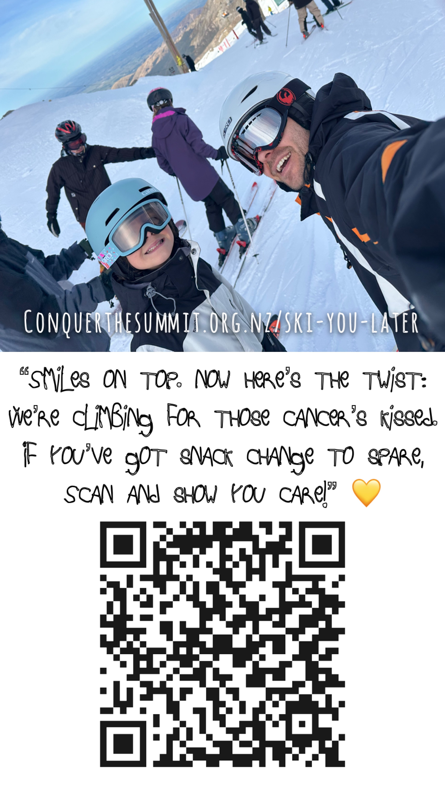

YouTube, run end to end
Scripting, shooting, edit, thumbnails, titles and publishing cadence, then reading the analytics afterwards to decide what comes next.
I take technical, dry or complicated subject matter and turn it into video and social content that people actually finish. Shot, edited, graded and finished, front to end, including the visual effects.
Detail-oriented creator with over two decades in the film and commercial industry; strong storytelling, creative leadership, and quick to think on my feet when a problem needs solving.
Animation / Visualisation / Post-production / Filming / Photography / Writing
Projects include Audi, Porsche and Toyota, and blockbuster films including Avatar, Wonder Woman and Tomb Raider.
Scripting, shooting, edit, thumbnails, titles and publishing cadence, then reading the analytics afterwards to decide what comes next.
Brief to delivery with stakeholders in the room: sign-off, revisions, and deadlines that don't move.
A full post pipeline including visual effects. A diagram, a cutaway or a motion sequence is made in-house, not quoted out.
Short formVertical video, reels and carousels made native to each platform, planned as a channel with a cadence rather than one-off posts.
Long formBlog posts and Substack articles that go deeper into a subject and build a readership over time.
Club member and RC flight sim at home. Aviation is a genuine interest, and it shows up in the subjects I choose to film.
A flagship brand film for a medical education technology company. The challenge: make a complex virtual training platform instantly understandable, and credible, to medical students and the universities that train them. I owned the project end to end, from concept and script through production and post to a search-optimised YouTube launch.





Research and scripting, storyboarding, shot planning, camera, lighting and sound, on location or in a controlled setup.
Contributed to productions for Peter Jackson, James Cameron and Steven Spielberg, where the standard for a frame is set very high and the deadline is immovable.
At Virtual Medical Coaching I ran the marketing department for a technical product sold to a specialist audience of medical students and universities. The brief: explain a sophisticated virtual training platform, earn the trust of clinicians and academic decision-makers, and grow demand with lean resources. I built and ran the marketing engine to do exactly that, from positioning and planning through campaign execution and performance reporting.
Defined audience segments and personas for learners and institutions, sharpened the value proposition and built a messaging framework the whole team could work from. Every channel and campaign mapped to clear objectives across the funnel: awareness, consideration and conversion.
Planned and ran an always-on editorial calendar built on content pillars, product milestones and key dates in the academic year. That kept a consistent publishing cadence where every asset had a defined purpose, format and channel.
Scripted and organised webinars as a trust-building, lead-generation channel: topic and speaker selection, run sheets and scripts, registration pages and reminders, promotion, and post-event content repurposed from the recordings.
Promoted every campaign across several social media platforms, blending organic and paid social. With budget: audience targeting, creative testing and spend optimised for reach and registrations. Without budget: organic growth through platform-native content, community engagement and smart repurposing. Reach, engagement rate, click-through rate and sign-ups were tracked as KPIs to shape the next iteration.
Full reel, extended case studies and references available on request. Send a note and I'll reply from my own address.